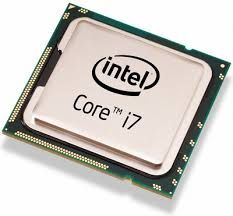
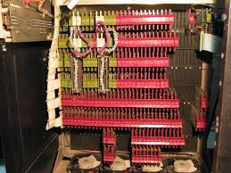
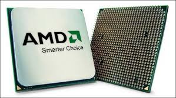
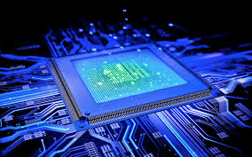

A unidade central de processamento ou CPU (Central Processing Unit), também conhecido como processador, é a parte de um sistema computacional, que realiza as instruções de um programa de computador, para executar a aritmética básica, lógica, e a entrada e saída de dados. A CPU tem papel parecido ao cérebro no computador. O termo vem sendo usado desde o início de 1960. A forma, desenho e implementação mudaram drasticamente desde os primeiros exemplos, porém o seu funcionamento fundamental permanece o mesmo.
As primeiras CPUs personalizadas foram concebidas como parte de um computador maior. No entanto, este método caro de fazer CPUs personalizadas para uma determinada aplicação rumou para o desenvolvimento de processadores produzidos em massa que são feitas para um ou vários propósitos. Esta tendência de padronização em geral começou na época de discretos minicomputadores e mainframes transistors e acelerou rapidamente com a popularização dos circuitos integrados (CI). | ||
|  |  | |
|  |  | |